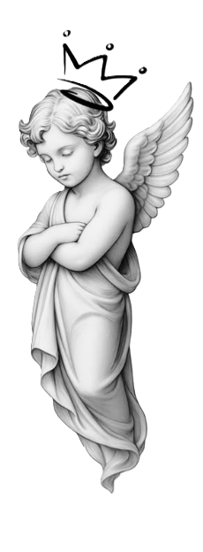

Hellou! Mä oon Sarita - kasvot Sarya Inkin takana
Oon haaveillut tatuoimisesta tosi nuoresta asti, mutta 2023 oli se vuosi kun päätin että nyt joko tehdään tai lopetetaan jahkailu. Ja onneksi tein. En oo katunut päivääkään. Mun tausta on vähän yllättävä: oon koulutukseltani sosionomi. Oon tehnyt sote-alan hommia pian neljä vuotta, kuunnellut, kohdannut ja kannatellut - ja ehkä just siksi mun penkissä istuminen on aika rauhallinen kokemus. Mut rehellisesti? Sote-ala alkaa olla mun osalta nähty.
Viime aikoina oon rakastunut ihan toiseen maailmaan: koodaamiseen ja sovellusten tekemiseen. Tatuoija, sosionomi ja koodari - miksei? Seuraava haave oliskin, että voisin tulevaisuudessa yhdistää luovuuden ja teknologian mun työssä. Mutta yksi asia on varma: tatuoinnit ei oo katoamassa mun elämästä mihinkään.
Luonteeltani oon tosi introvertti, mikä on vähän ironista, kun miettii että teen työtä, jossa jutellaan tunteista ja pistellään neulaa ihoon. Mutta ehkä just siksi mun penkissä saa olla oma itsensä. Ei small talk -pakkoa. Saa olla hiljaa. Saa nauraa. Saa jännittää.
Oon alunperin Seinäjoelta, manselaistuin -24, mutta Etelä-Pohojammaa on silti aina syrämmes ristus. Omistan 1-vuotiaan maatiaskissan nimeltä Kiara, joka luulee omistavansa mut.
Teen pääsääntöisesti mustavalkoisia tatuointeja. Mun tyylilaji vaihtelee paljon, enkä halua lukittautua yhteen muottiin - mulle tärkeintä on tehdä sun näköinen kuva. Olipa kyseessä herkkä fine line, vähän rouheampi musta työ tai jotain siltä väliltä. Rakastan sitä hetkeä, kun asiakkaan idea muuttuu luonnokseksi ja lopulta iholle jääväksi tarinaksi.
Jos oot miettinyt tatuointia, etsit rauhallista, kuuntelevaa ja turvallista tekijää - saatat olla oikeassa paikassa. Teen jokaisen kuvan huolella ja yhdessä suunnitellen, koska mulle tärkeintä on että se tuntuu sun näköiseltä.
Jos haluat mun penkkiin, laita viestiä!
